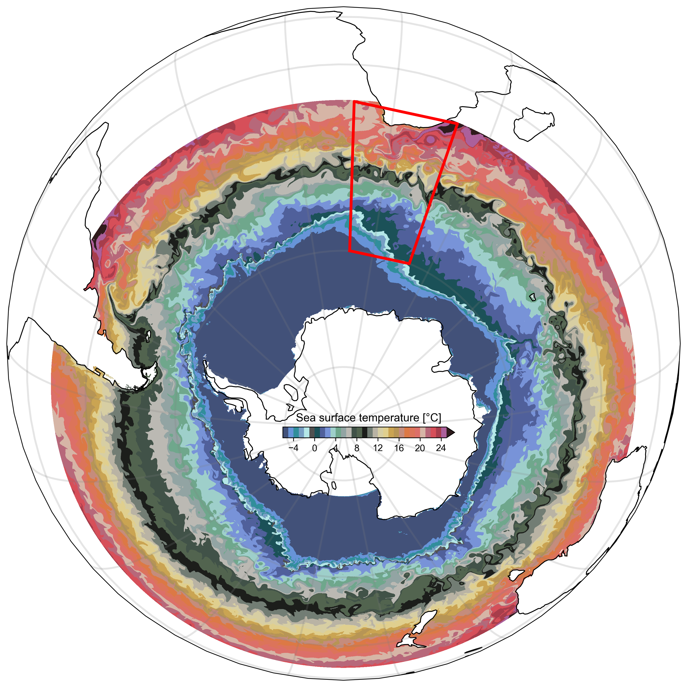

Shop
I thought it would be hilarious to have a shop on a "serious" portfolio website.

BIOPERIANT12
The final step of building an amazing mesoscale-resolving model isn't the publication — it's the merch!
Shop merch →
BIOPERIANT12 stickers




Stickers of my cats